For project 3 we are supposed to do morphing between faces, change facial features and expressions. This is actually done quite easily by first just manually annotating corresponding points on faces.
Then triangulation of these points which is done using the Delaunay algorithm so that we get corresponding triangulation between two different faces. After that, we can do all sorts of cool stuff by just
warping and cross dissolving. By using affine transformations we warp face shapes into other people's shapes and by cross dissolving, which is essentially linear interpolation of the colors, we can create
realistic blends of faces using more than just the shapes. Below I will go through the process step by step following the project tasks.
Part 1: Corresponding Points
For this task, I used the program recommended for annotating corresponding points for two images, one of me and one of famous actor Leonardo DiCaprio. I chose 66 corresponding points on each face
and then added 4 more corner points leading to a total of 70 points in each image. Below I present the triangulation of the corresponding points. Note that I tried to capture as many facial features
with as few points as possible in order to get as good of a result as possible with less computation time.
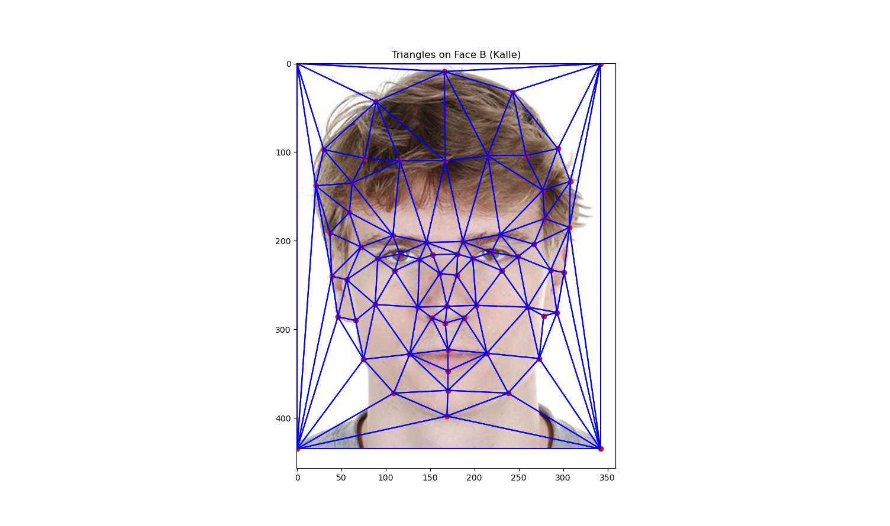
Triangulation of corresponding points on my face

Triangulation of corresponding points on Leo's face
Part 2: Computing the Halfway Face
Now that I have the corresponding triangulations for each face, the fun begins. The first thing I do is calculate the halfway face which is done by doing the following: First, we calculate the halfway keypoints
by taking the average of my key points and Leo's keypoints. Then we again triangulate using our new halfway keypoints so that we get a new set of triangles. Then we warp my triangles into the corresponding
triangles of the midway face as well as Leo's triangles. This is done by affine transformation which maps one triangle into another. This is done for each triangle in both the image of me and Leo. Now we have warped our faces into the average between our faces. Now we want to
change the color so that we get a good blend between not only the shapes, this is done by cross dissolving, taking the average of the pixel values and adding them together. After normalization, I got the following
results.
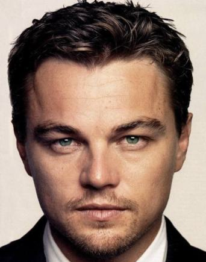
Original image of Leo
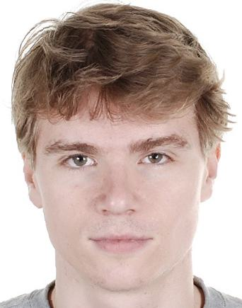
My face warped into the halfway shape
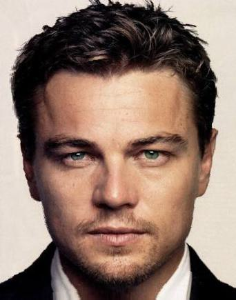
Leo's face warped into the halfway shape
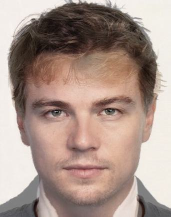
After cross dissolving, averaging the two faces
Part 3: The Morph Sequence
Now that we know how to create the halfway face, we should also be able to create other fractions of blending. Luckily, it is the same exact process
just instead of taking the average we use other fractions than 1/2. The task was to create a video which is a sequence of 46 images starting with the
original image of one face and ending with the original image of the other face. I did this by performing the same process as before but 46 times with 44 fractions
evenly spanned between zero and one in order to get a clean, smooth transition. The cool result is presented below.
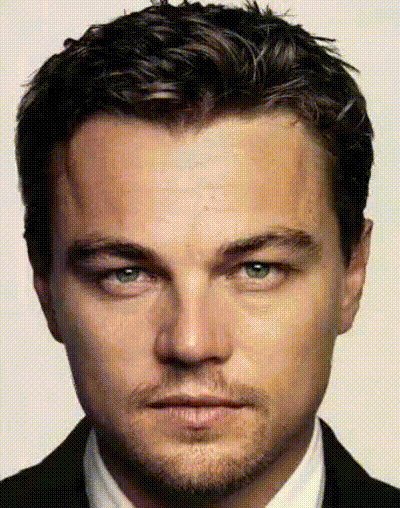
Morphing sequence from Leo to me
Part 4: Calculating the Mean Face of the Population and More
Now that we have started to get warm, we can do other cool stuff. The first thing is calculating the average face of Danish people. I used
the Danish dataset that was recommended which was already annotated with corresponding points; however, I added the 4 corner points because I liked the results
more using them. Then I took the average of the corresponding points for both males and females, creating the average face shape for both males and females. After that,
I morphed each male and female into their corresponding gender average shape. When this was done, I calculated the average face by cross dissolving the images.
The results of the average faces are presented below, as well as some examples of males and females warped into the average shape.
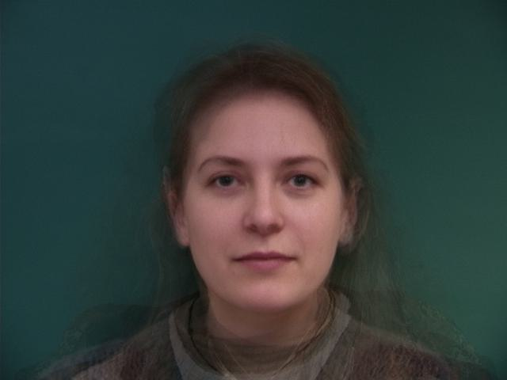
The average face of a Danish female
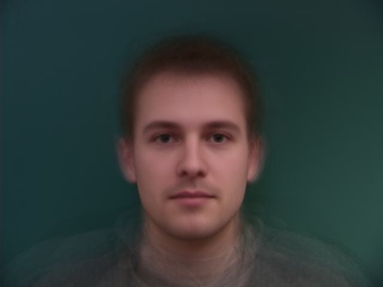
The average face of a Danish male
Note that the average male is more symmetric but also has much smoother skin. This is due to the fact that there were many more males in the dataset
than females, hence the deviations from the average face get much more smoothed out for the males, and the variance is much higher for the females.
I also warped my face into the geometry of the average male Dane, as well as warping the average male Dane into my geometry. The results are presented below.

Me warped into the average male Dane shape
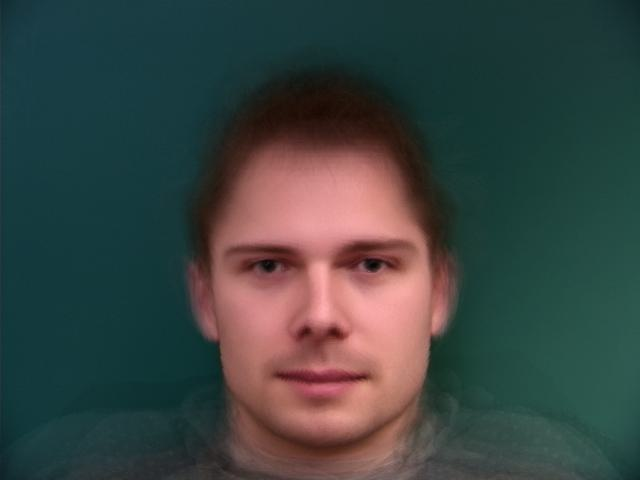
The average male Dane warped into my shape
Part 5: Extracting My Characteristics
(Content Missing)
Bells and Whistles: Changing Ethnicity on Myself
For the bells and whistles, I chose to change my ethnicity to Chinese by using the average face of a Chinese male. I tried three different combinations.
The first was me warped into the shape of the geometry of the average Chinese male. The second was warping a Chinese male into my shape and then cross dissolving, and then the
last one, which worked best: morphing me into the average Chinese male shape, and then cross dissolving with a fraction of 0.5. The results are presented below.
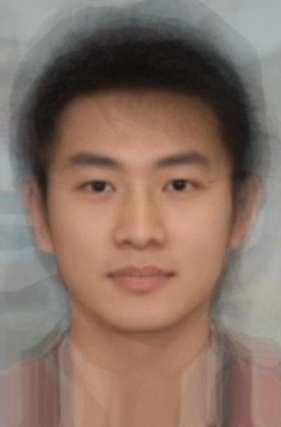
Average Chinese male
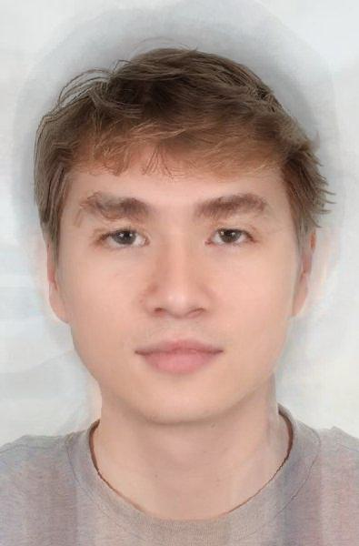
Full warp and half cross dissolve